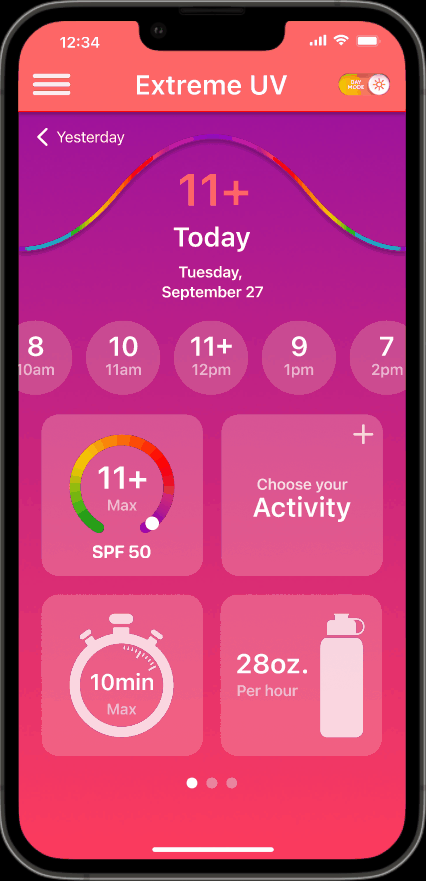
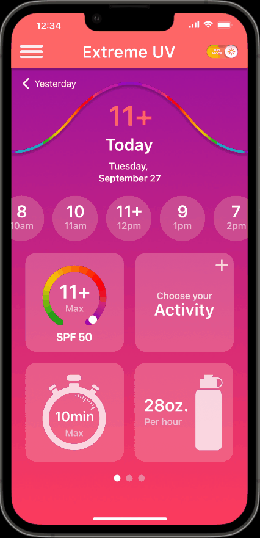

Chris Marcellus
inSpectrum is an app that calculates UV data based on a user’s location and gives personalized recommendations for the user to protect themselves, stay healthy, and avoid melanoma. It features hourly UV data, UV history tracker, hydration reminder, burn rate calculator, UV protection timer and activity planning.
I had a hand in every step of the process with my team, from ideating, collecting research data and analyzing it to sketching and constructing wireframes, to the eventual final design where my main job was to make sure interactions with the prototype were smooth and easy to navigate.
There is a lack of awareness of UV and how damaging it can be to a person. There needs to be an easy way for users to understand and identify what they need to protect themselves from the sun to avoid future health risks such as melanoma and skin cancer.
We ideated the app and conducted interviews to determine what features would be helpful as reminders or data trackers. We then compiled the data from the interview and turned it into an app with many of these features in one convenient Main Page.
Our research began with interviews:
Our team interview 5 people that are usually involved with some form of outside activity, from skiing, hiking, running, swimming and mountain biking.
Interviews were conducted, where we asked users: How long they spend outside in the sun, what activities they do outside, what concerns they had for exposure and how they protect themselves. We found that the majority of the battle is awareness and remembering to protect themselves.
They found it important to know what UV Index was and how that correlated to what sunscreen they should use and how often they would need to reapply. They were also concerned with water consumption, how much they would need and how often should they drink depending on the activity they were doing. Most importantly, they wanted an app the was trustworthy and accurate with its information on UV and AQI as well.
These interviews are how we came up with what features we wanted to include.

The main tools people use to determine how much UV radiation there is on a given day are weather apps and widgets. While these apps are helpful in getting the initial data point, not many know what the UV rating means and what they’ll need to protect themselves.
We did notice one app that took into account that UV affects everyone differently, and asked many questions to create a personalized experience. We wanted to enhance that and make that a major feature for inSpectrum.
We imagined a user named Samantha Riggs, who is a mother of 2 children and a theme park engineer; a profession that involves her being indoors on many days and outdoors for many others. She has a family history of skin cancer and worries more about her children than about herself. In her busy life, she needs a simple all encompassing solution that will remind and inform her about what she needs to protect herself and her children.
To understand a user’s potential journey for using this app, a User Journey Map was created based on our User Persona so that we can visualize the steps she’d take in finding our app to better empathize and physically see the journey from beginning to end, while keeping background, goals and pain points in mind.
When creating the onboarding process, we sorted out what pages needed to be created and what order they should go in using a User Flow. I thought it was important to visually display this process as it would become helpful in sorting out, from registering, to creating the profile and getting to the main page, the interaction that needs to happen with this app.
Once the User Flow was made, I was able to sketch pages that would be needed for onboarding and profile creating that gets a user to the main page.
From there, mid-fidelity wireframes were made and were prototyped so that it could be tested for usability.
Before we went into making our hi-fi, we wanted to test the ease of use and navigation with some user testing. Users were given 3 tasks:
All users were able to complete the tasks with relative ease, but we paid attention to where they were struggling and determined we needed to make some fixes.
Our Main Fiexes:
The UI Style for this project comes from the inspiration of UV light itself. Rainbow highlights were used as accents, representing the spectrum of light while also utilizing a dark mode for to give a clean black background look.
 

This prototype shows a complete and in-depth design of what the inSpectrum app would look like. From this point the next step would look into having the app developed and look for a non-profit to give the app a platform.
inSpectrum could also, potentially, be combined with a bigger weather app as an extension or plug-in.